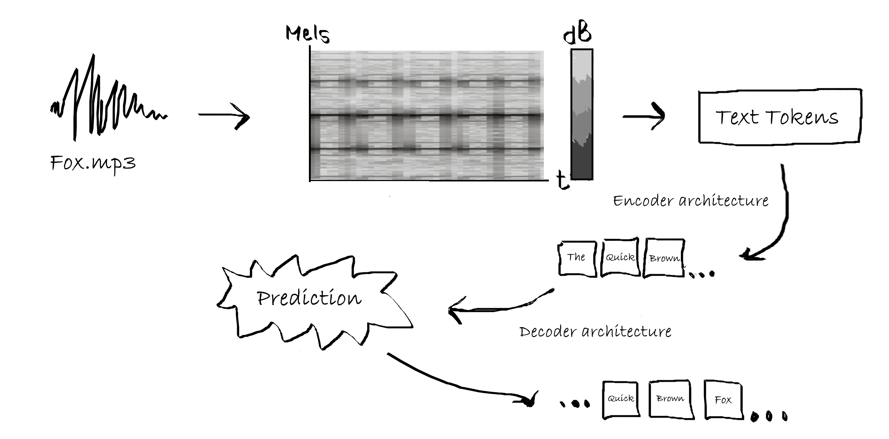

import IPython
IPython.display.Audio("audio samples/mixkit-cartoon-kitty-begging-meow-92.wav")
# warning: Turn down your volume as the audio may be loud!3.7 - Advanced - Transcription
advanced
python
Whisper
audio transcription
PyTorch
preprocessing
diarization
Prerequisites
- Have installed Anaconda Navigator and Python on your computer
Learning outcomes
- Understand the basic mechanics behild audio transcription
- Be familiar with the various elements of Whisper audio transcription
- Be able to transcribe and diarize short-form and long-form audio
1. Introduction
1.1 What is audio transcription?
Audio transcription is the language processing task of converting audio files containing human speech into text using a computer. This task most often includes the process of diarization, the process of distinguishing and labeling the various speakers in the audio file. Application of audio transcription include multi-lingual captions on online videos, real-time online meeting transcription, and much more.
Automatic speech recognition (ASR) systems are interfaces that use machine learning/artificial intelligence to process speech audio files into text. In this module, we will be using the open-source ASR system Whisper by OpenAI to transcribe and diarize various audio files.
1.2 What is Whisper?
Whisper is a ASR model for transcription and speech recognition designed by OpenAI. Whisper stands out from it’s predecessors due to it being trained on roughly 680 thousand hours of labeled audio transcription data, signfificantly more than the models that came before it; thus, Whisper exhibits a much higher accuracy when tested against audio data outside of it’s training set compared to older models such as Wav2Vec\(^{[1]}\).
1.2.1 How does Whisper work?
Whisper, and audio transcription models in general, work by converting raw audio data into a spectrogram, specifically a Log-Mel spectrogam, which plots the time on the x-axis, the mels scale (a logarithmic form of the Hertz frequency) on the y-axis, and colors the data with respect to the amplitude of the audio data at each mel frequency and point in time.
The mel-spectogram is then ran though a tokenizer, which converts the individual words in the spectrogram into lexical tokens- strings with assigned meaning that can be read by the language model. The encoder is a stack of transformer blocks that process the tokens, extracting features and relationships between different parts of the audio. The processed information from the encoder is passed to the decoder, another stack of transformer blocks that generate an output sequence (predicting the corresponding text captions word by word)\(^{[2]}\).

1.2.2 Optimizing Whisper transcription
Alongside whisper, there exist many libraries that aim to optimize the current whisper model by increasing transcription speed and accuracy. Some examples include:
Distil-Whisper: a smaller, optimized version of whisper created by HuggingFace using knowledge distillation. The Distil-Whisper model claims to be 6x faster, 50% smaller, and within a 1% word error rate relative to the original whisper model \(^{[3]}\). > Pros: CPU-compatible, significantly faster compared to OpenAI’s Whisper model.
Cons: Only supports english-speech to english-text transcription.This is the model that we will be using in this notebook, due to it’s relevance and compatability with our use cases for audio transcription. However, if you have a relatively powerful computer and feel up for the challenge, consider following along with one of the alternatives listed below.
Whisper-Jax: Another optimized version of whisper built on the Transformers library. Whisper-Jax claims to be 70x faster than the original Whisper model \(^{[4]}\). > Pros: CPU-compatible, significantly faster compared to OpenAI’s Whisper model.
Cons: Optimized for GPU/TPU usage.
Insanely-Fast-Whisper: A command-line interface that greatly speeds up whisper performance and claims to be able to trascribe 150 minutes of audio in less than 98 seconds \(^{[5]}\).. > Pros: One of the fastest versions of whisper available today.
Cons: Only works on NVIDIA GPUs.
2. Installations
2.1 Activating conda environment & downloading Jupyter Lab
(If you’ve already done this, please move on to section 2.2)
2.1.1 Setting up and activating a conda envornment
An environment is a repository of packages that you have installed on your computer. It acts similar to a virtual machine, keeping the packages needed for one project seperate from other projects, to avoid version conflicts, cluttering, etc.
Let’s start by opening up the conda command prompt. 1) On windows 11, press the windows icon at the bottom of the screen. 2) Press “all apps”, and open the anaconda3 (64bit) folder. 3) Left-click on anaconda prompt, select more, and press run as administrator. This will open the command prompt window. 4) Lets create a new environment and call it “whisper”. In the command prompt, copy-and-paste the following line of code: conda create -n whisper. 5) Let’s activate our new environment. Once your new environment is created, type conda activate whisper.
We’ve successfully created and activated our environment.
2.1.2 Installing and opening Jupyter lab
To install jupyter, type in the following line of code: conda install jupyter. Once jupyter is finished installing, simply type jupyter lab in the command prompt. This will open up jupyter locally in your default browser.
Note: these steps only need to be done once on each computer. The next time you wish to open jupyter locally, you only need to activate your conda environment and type in “jupyter lab” in the conda prompt.
Warning: Make sure not to close the anaconda prompt while jupyter is running. Doing so will cause Jupyter to lose connection and may result in you losing unsaved work.
2.2 Installaling Whisper
2.2.1 Installing Pytorch
Lets start off by installing PyTorch, a machine learning library based on the Torch frame work, on which Whisper is built on. To install pytorch, open the conda prompt as an administrator, ensure that you are in the whisper enviornment that we created, and type in the following line of code:
conda install pytorch torchvision torchaudio cpuonly -c pytorch
If, for some reason, the installation does not work, you can also install pytorch through pip:
pip3 install torch torchvision torchaudio
Note: This installation is CPU only. If you have a NVIDIA GPU and would like to run whisper on your GPU, download CUDA and follow the PyTorch GPU setup here.
Note that the installation may take a few minutes to complete, and that the conda prompt will ask you to confirm installation by pressing ‘y’. If the end result looks like this, you’ve installed Pytorch correctly.
2.2.2 Installing Transformers
Transformers is a python package developped by HuggingFace which allows for easier downloading and training of natural langauge processing models, such as Whisper. The transformers library simplifies the audio transcription process by converting our audio files into text tokens for transcription without redundant code \(^{[6]}\).
We can download the transformers library using the following line of code in our conda prompt. We’ll also install the Datasets library to in case you’d like to use additional short-form audio:
pip install --upgrade pip
pip install --upgrade transformers accelerate datasets[audio]
2.2.3 Installing Whisper
We can now install whisper. To do so, type the following line of code into the conda command prompt: pip install -U openai-whisper.
Additionally, we’ll need to install the command-line tool FFmpeg, a open source software that helps with audio and video processing. We can do so by running the following line of code in conda prompt: conda install conda-forge::ffmpeg.
2.2.4 Installing Librosa and Soundfile
Lastly, we’ll need to install librosa and soundfile, python packages for music and video analysis, which will allow us to preprocess our audio recordings before transcribing them. To do this, enter pip install librosa soundfile in the conda command prompt.
3. Loading audio and preprocessing
3.1 Loading audio samples
It’s always a good idea to at least partially listen to the audio we wish to transcribe, to make sure that the audio file has no issues.
Lets start off by loading some of the audio samples provided in this module. We’ll do this using the IPython library, which should already be installed on your device. If the code fails to run, run the following line of code in the conda prompt: pip install ipython.
Here is another example, this time from a longer ColdFusion Youtube video.
import IPython
IPython.display.Audio("audio samples/The Boeing Scandal Just Got A LOT Worse.mp3")
# warning: Turn down your volume as the audio may be loud!3.2 Preprocessing audio
A sampling rate is the number of samples per second (or per other unit) taken from a continuous signal (the actual audio) to make a discrete signal (the audio recording)\(^{[7]}\). It’s important to note that Whisper transcription is designed to work on 16kHz audio samples. Since not all audio is 16kHz, we need to check the sampling rate of our audio file, and if it is not 16kHz, we can resample audio to the correct sampling rate using the librosa library.
Let’s start off by checking the sampling rate of the kitty audio sample:
import librosa
import soundfile
# Load the audio file
audio_file_path = "audio samples/mixkit-cartoon-kitty-begging-meow-92.wav"
y, sr = librosa.load(audio_file_path, sr=None) # Load the audio file and get the original sampling rate
print("Sampling rate:", sr)We see that the sampling rate, in this audio sample, is well above the 16khz sampling rate that Whisper requires. Thus, we need to convert it to the proper sampling rate of 16kHz. We’ll do this using the librosa package.
import librosa
import soundfile as sf
# Load the audio file
audio_file_path = "audio samples/mixkit-cartoon-kitty-begging-meow-92.wav"
y, sr = librosa.load(audio_file_path, sr=44100) # Load the audio file with the current sampling rate
# Resample the audio to 16 kHz
y_resampled = librosa.resample(y, orig_sr=44100, target_sr=16000) # Resample the audio to a sampling rate of 16 kHz
# Save the resampled audio to a new file
output_file_path = "audio samples/mixkit-cartoon-kitty-begging-meow-92_resamples.wav" # Path to save the resampled audio file
sf.write(output_file_path, y_resampled, 16000) # Save the resampled audio to a WAV fileaudio_file_path = "audio samples/mixkit-cartoon-kitty-begging-meow-92_resamples.wav"
y, sr = librosa.load(audio_file_path, sr=None) # Load the audio file and get the new sampling rate
print("Sampling rate:", sr)This also works on MP3 files, such as the coldfusion video we played earlier:
audio_file_path = "audio samples/House debates CPC motion of non-confidence against Trudeau's carbon tax CANADIAN POLITICS.mp3" # Replace "your_audio_file.wav" with the path to your audio file
y, sr = librosa.load(audio_file_path, sr=None) # Load the audio file and get the original sampling rate
print("Sampling rate:", sr)# Load the audio file
audio_file_path = "audio samples/House debates CPC motion of non-confidence against Trudeau's carbon tax CANADIAN POLITICS.mp3"
y, sr = librosa.load(audio_file_path, sr=44100) # Load the audio file with the current sampling rate
# Resample the audio to 16 kHz
y_resampled = librosa.resample(y, orig_sr=44100, target_sr=16000) # Resample the audio to a sampling rate of 16 kHz
# Save the resampled audio to a new file
output_file_path = "audio samples/House_debates_CPC_motion_of_non-confidence_against_Trudeau's_carbon_tax_CANADIAN POLITICS_resampled.mp3" # Path to save the resampled audio file
sf.write(output_file_path, y_resampled, 16000) # Save the resampled audio to a mp3 fileaudio_file_path = "audio samples/House_debates_CPC_motion_of_non-confidence_against_Trudeau's_carbon_tax_CANADIAN POLITICS_resampled.mp3"
y, sr = librosa.load(audio_file_path, sr=None) # Load the audio file and get the original sampling rate
print("Sampling rate:", sr)4. Transcribing single-speaker audio
We can now begin testing out audio transcription. There are two important distinctions to keep in mind when transcribing audio:
- Short-form versus long form audio - whisper is trained on 30-second audio clips, and will thus cut off audio longer than 30 seconds. We can overcome this by chuncking our audio sample into multiple audio samples, and then stitching them back together after the transcription process.
- Single-speaker versus multi-speaker audio: Audio with a single speaker is easier to transcribe compared to audio with multiple speakers. The segmentation of speech into individual speakers, known as diarization, requires a slightly different approach to transcription and will be covered in section 5.
4.1 Transcribing short form audio
Let’s begin transcribing our first audio sample. We’ll be using a trimmed 25 second audio sample from the Wall Street Journal. As mentioned, it’s always a good idea to start off by listening to our audio sample before transcribing it.
import IPython
IPython.display.Audio("audio samples/WSJ-23andme_resampled.wav")4.1.1 Preprocessing
You’ll notice that the file in question is an mp4 file rather than a mp3/wav file, meaning that the original file contains both audio and video. This isn’t an issue as we can convert it to a mp3/wav file during the preprocessing step.
audio_file_path = "audio samples\WSJ-23andme.mp4"
y, sr = librosa.load(audio_file_path, sr=None) # Load the audio file and get the original sampling rate
print("Sampling rate:", sr)import soundfile as sf
# Load the audio file
audio_file_path = "audio samples/WSJ-23andme.mp4"
y, sr = librosa.load(audio_file_path, sr=44100) # Load the audio file with the current sampling rate
# Resample the audio to 16 kHz
y_resampled = librosa.resample(y, orig_sr=44100, target_sr=16000) # Resample the audio to a sampling rate of 16 kHz
# Save the resampled audio to a new file
output_file_path = "audio samples/WSJ-23andme_resampled.wav" # Path to save the resampled audio file
sf.write(output_file_path, y_resampled, 16000) # Save the resampled audio to a WAV fileaudio_file_path = "audio samples/WSJ-23andme_resampled.wav"
y, sr = librosa.load(audio_file_path, sr=None) # Load the audio file and get the original sampling rate
print("Sampling rate:", sr)4.1.2 Transcribing
We’re now ready for our first transcription. The transcription process using distill-whisper is divided into the following steps:
- Model specifications: We start with initializing a PyTorch model for transcription, selecting either GPU or CPU based on availability. We then specify the pre-trained model we wish to use, with options for optimizing memory usage and ensuring safety in tensor operations.
import torch
from transformers import AutoModelForSpeechSeq2Seq, AutoProcessor, pipeline
device = "cuda:0" if torch.cuda.is_available() else "cpu" #If you have CUDA, this will run the transcription process on your GPU. If not, it will default to your CPU.
torch_dtype = torch.float16 if torch.cuda.is_available() else torch.float32 #specifying GPU/CPU parameters for pytorch
model_id = "distil-whisper/distil-large-v3" #specifies the model ID, in this case we are using distil-large-v3
# you can replace the model with any model you want that is compatible
model = AutoModelForSpeechSeq2Seq.from_pretrained(
model_id, torch_dtype=torch_dtype, low_cpu_mem_usage=True, use_safetensors=True #specifying CPU parameters and model, you can change low_cpu_mem_usage to `false` for faster transcription
)
model.to(device)
processor = AutoProcessor.from_pretrained(model_id) #specifying processor- Pipeline: We then create a pipeline for automatic speech recognition using the specified model, tokenizer, and feature extractor, utilizing the specified torch data type and device for computation.
A pipeline is a series of interconnected steps or processes designed to accomplish a specific task efficiently. The huggingface audio transcription pipeline is structured to take raw audio inputs and convert them into transcriptions using automatic speech recognition. You can read more about the pipeline used in this tutorial here.
pipe = pipeline(
"automatic-speech-recognition", #specifies what we want our model to do
model=model,
tokenizer=processor.tokenizer,
feature_extractor=processor.feature_extractor,
max_new_tokens=128,
torch_dtype=torch_dtype,
device=device,
)- Transcription: Finally, we pipe our audio sample into our pipeline, and generate an output.
Note that steps 1 and 2 will only need to be ran once in a given notebook, unless you need to change the model specifications at a later point.
result = pipe("audio samples/WSJ-23andme_resampled.wav")
print(result["text"])You’ll notice that the transcription has minor mistakes, namely transcribing “23andMe” incorrectly. One limitation with automated transcription is that ASR models are trained on a finite vocabulary, and thus struggle with transcribing uncommon or out-of-vocabulary words accurately. Therefore, it’s always a good idea to proofread the generated output.
4.2 Transcribing long-form output
Realistically, most audio you’ll be working with is longer than 30 seconds. However, the Whisper ASR model is inherently built on 30 second samples. Any audio shorter than 30 seconds will have additional white noise added to it to bring it to 30 seconds, and any audio longer than 30 seconds will be cut at the 30 second mark. To overcome this, we can modify our code to allow for long-form audio transcription by “chuncking” our audio into 30-second segments, transcribing each segment individually, and then “stitching” the resulting text back together to form the complete transcription.
You can learn more about long-form audio transcription on huggingface here.

We will modify our code by adding the following lines of code to our pipeline: chunk_length_s=25, batch_size=16, and stride_length_s=(4, 2). The chunk_length_s argument specifies the length of each individual chunk to be cut from our audio sample. The stride_length_s argument specifies the length of each stride, the overlapping section between individual chunks. The batch_size argument specifies how many chunks whisper should process at once.
pipe = pipeline(
"automatic-speech-recognition", #specifies what we want our model to do
model=model,
tokenizer=processor.tokenizer,
feature_extractor=processor.feature_extractor,
max_new_tokens=128,
chunk_length_s=25,
stride_length_s=(4, 2),
batch_size=16,
torch_dtype=torch_dtype,
device=device,
)Let’s test out our long-form transcription model on the parliamentary debate sample we saw earlier.
result = pipe("audio samples/House_debates_CPC_motion_of_non-confidence_against_Trudeau's_carbon_tax_CANADIAN POLITICS_resampled.mp3" )
print(result["text"])5. Transcribing multi-speaker audio
Speech diarization is the process of partitioning audio containing human speech into segments according to the identity of each speaker \(^{[7]}\).
Most audio contains more than one speaker. Thus, diarization can be a useful tool for determining who is speaking, and when. Whisper, on its own, does not support speaker diarization. For this reason, we’ll be combining a number of tools to allow us to diarize audio output. Namely, we’ll be using pyannote, a open-source toolkit for speaker diarization in python \(^{[8]}\), and pyannote-whisper, a python library that extends pyannote diarization to whisper ASR \(^{[9]}\).
5.1 Installations
Pyannote is built on a number of libraries that require huggingface access tokens to access. Therefore, the first thing we’ll need to do is create an account on huggingface and create our own personal access token.
- Go to https://huggingface.co/join and create an account.
- Navigate to settings by pressing the circular button at the top right of the screen.

- Nagivate to the left-hand side of the screen and press Access Tokens.

- Press New token, and create a new token. Make sure the token type is a read token. Then, copy your token.


- Head over to https://huggingface.co/pyannote/segmentation-3.0 and accept the user license. Make sure you do this while logged in.
- Head over to https://huggingface.co/pyannote/speaker-diarization-3.1 and accept the user license. Make sure you do this while logged in.
- Lastly, we’ll need to install pyannote. Head over to your conda navigator in administrator mode, activate your environment, and enter
pip install pyannote.audio.
You should now be all set!
Warning: When running the cell below, you may get a warning stating that you must accept the user agreements for a few other libraries. Please accept the user agreements for those libraries as well (they will be linked in the error message) and re-run the cell below.
5.2 Diarization
Let’s transcribe and diarize the CBC interview we played earlier. The first thing we must do is import the pipeline from pyannote and authenticate ourselves.
from pyannote.audio import Pipeline
pipeline = Pipeline.from_pretrained(
"pyannote/speaker-diarization-3.1",
use_auth_token="INSERT_TOKEN_HERE") #replace this with your authentication token!We’ll also need to specify the number of speakers in the audio. If you are unsure about the number of speakers, you can enter none for one or all of the categories below. The pipeline segment below diarizes our audio into the individual speakers, without transcribing it.
who_speaks_when = pipeline("audio samples\House_debates_CPC_motion_of_non-confidence_against_Trudeau's_carbon_tax_CANADIAN_POLITICS_resampled.mp3",
num_speakers=2,
min_speakers=2,
max_speakers=2) #since this code is diarizing the entire audio file, it may take a while to run!We can take a look at the contents of our audio by running the result of the pipeline. We can see that there are two speakers in this interview.
who_speaks_whenNow that we’ve diarized our audio sample, let’s transcribe it using whisper. We’ll also add timestamps and speaker identifiers. The OpenAI whisper model is better suited for diarization, therefore, we’ll be working with the whisper-small model rather than the distill-whisper model.
# load OpenAI Whisper ASR
import whisper
# choose among "tiny", "base", "small", "medium", "large"
# see https://github.com/openai/whisper/
model = whisper.load_model("small") audio_file = "audio samples\House_debates_CPC_motion_of_non-confidence_against_Trudeau's_carbon_tax_CANADIAN_POLITICS_resampled.mp3"
from pyannote.audio import Audio
for segment, _, speaker in who_speaks_when.itertracks(yield_label=True): #iterating over segments of the audio file and creating speaker labels
waveform, sample_rate = audio.crop(audio_file, segment) # extract the waveform data and sampling rate
text = model.transcribe(waveform.squeeze().numpy())["text"] # transcribes the speech in the segment into text
print(f"{segment.start:06.1f}s {segment.end:06.1f}s {speaker}: {text}") #formats start and end timesAs we can see, the individual speakers have successfully been segmented. However, the resulting output is a bit untidy. Let’s clean it up by assigning names to our two speakers, fixing the timestamps, and adding vertical spacing between each speaker.
from pyannote.audio import Audio
def rename_speaker(speaker):
if speaker == "SPEAKER_00":
return "Mike"
elif speaker == "SPEAKER_01":
return "Todd"
# Add more elif conditions if you are using a different audio with more speakers
else:
return speaker
# Function to format output for each speaker
def format_speaker_output(segment, speaker, text):
start_minutes, start_seconds = divmod(segment.start, 60)
formatted_output = f"{int(start_minutes):02d}:{start_seconds:04.1f} - {rename_speaker(speaker)}: {text}"
return formatted_output
audio_file = "audio samples/House_debates_CPC_motion_of_non-confidence_against_Trudeau's_carbon_tax_CANADIAN_POLITICS_resampled.mp3"
#feel free to try any other audio file
for segment, _, speaker in who_speaks_when.itertracks(yield_label=True):
waveform, sample_rate = audio.crop(audio_file, segment)
text = model.transcribe(waveform.squeeze().numpy())["text"]
formatted_output = format_speaker_output(segment, speaker, text)
print(formatted_output)
print() As we can see, the transcription isn’t perfect: Whisper often struggles with last names due to them not being included in the training data. For this reason, it’s important to proof-read the resulting output. If you’d like to try out different audio, add your audio to the audio samples folder and repeat the process using the correct file path. Additionally, if you’d like to use a different model, a full list can be found here.
5.2.1 (Optional) Converting ASR transcription output into a PDF document
The sample code below uses the reportlab library to automatically convert generated output into a PDF, and serves as an example of an application for ASR transcription. As metioned, proof-reading is still very important, as transcriptions may have errors. Feel free to edit the formatting to your liking. Make sure to install reportlab using pip install reportlab if it is not installed already.
from pyannote.audio import Audio
from reportlab.lib.pagesizes import letter
from reportlab.platypus import SimpleDocTemplate, Paragraph
from reportlab.lib.styles import getSampleStyleSheet
def generate_pdf(formatted_output_list, output_file="output_transcription_whisper.pdf"):
doc = SimpleDocTemplate(output_file, pagesize=letter)
styles = getSampleStyleSheet()
custom_style = ParagraphStyle("CustomStyle", parent=styles["Normal"], fontName="Times-Roman", spaceAfter=8) #PDF formatting specifications
content = [] #empty list used to store paragraphs and spacers
for formatted_output in formatted_output_list:
content.append(Paragraph(formatted_output, custom_style))
content.append(Spacer(1, 0.2 * inch))
#for-loop used to iterate over each formatted output string; creates and appends new paragraphs to the `content` list.
doc.build(content) #generates PDF
def rename_speaker(speaker):
if speaker == "SPEAKER_00":
return "Mike"
elif speaker == "SPEAKER_01":
return "Todd"
# Add more elif conditions if you are using a different audio with more speakers
else:
return speaker
formatted_output_list = []
# Function to format output for each speaker
def format_speaker_output(segment, speaker, text):
start_minutes, start_seconds = divmod(segment.start, 60)
formatted_output = f"{int(start_minutes):02d}:{start_seconds:04.1f} - {rename_speaker(speaker)}: {text}"
return formatted_output
audio_file = "audio samples/House_debates_CPC_motion_of_non-confidence_against_Trudeau's_carbon_tax_CANADIAN_POLITICS_resampled.mp3"
#feel free to try any other audio file
for segment, _, speaker in who_speaks_when.itertracks(yield_label=True):
waveform, sample_rate = audio.crop(audio_file, segment)
text = model.transcribe(waveform.squeeze().numpy())["text"]
formatted_output = format_speaker_output(segment, speaker, text)
formatted_output_list.append(formatted_output)
generate_pdf(formatted_output_list)6. Resources
6.1 In-text citations
- https://huggingface.co/learn/audio-course/en/chapter5/asr_models
- https://en.wikipedia.org/wiki/Whisper_(speech_recognition_system)
- https://github.com/huggingface/distil-whisper
- https://github.com/sanchit-gandhi/whisper-jax
- https://github.com/Vaibhavs10/insanely-fast-whisper
- https://huggingface.co/docs/transformers/en/index
- https://en.wikipedia.org/wiki/Sampling_(signal_processing)
- https://github.com/pyannote/pyannote-audio
- https://github.com/yinruiqing/pyannote-whisper
6.2 Audio sources
- https://mixkit.co/free-sound-effects/cat/
- https://www.youtube.com/watch?v=a32RLgqNfGs
- https://www.youtube.com/watch?v=9x6IN_zOvoQ&t=11s
- https://www.youtube.com/watch?v=gkxxtP9F6FY
6.3 Additional resources
- https://www.youtube.com/watch?v=wjZofJX0v4M&t=193s